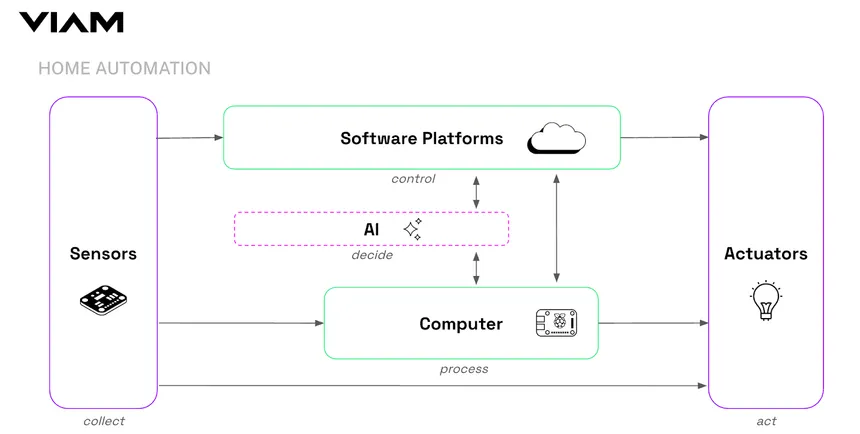

AI veikimo principas
Dirbtinis intelektas analizuoja jutiklių surinktus duomenis ir priima sprendimus naudodamas mašininio mokymosi algoritmus.

Naudojami jutikliai:
- Temperatūros jutikliai
- Judėjimo sensoriai
- Šviesos sensoriai
- Dūmų detektoriai
AI privalumai
- Energijos taupymas
- Didinamas saugumas
- Patogumas
- Automatiniai sprendimai